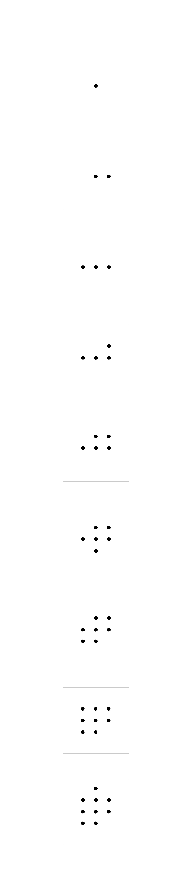
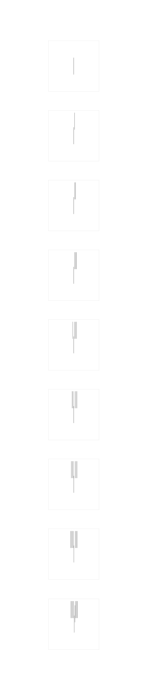

POINT LINE PLANE
In this line sketch I focused on the design elements of rhythm , tension, and hierarchy. Each line that is added to the 5x5 tiles create a rhythm on both sides of the centered line. The original layout as you can see has each line on the right gradually moving up and then on the left. The over all rhythm of adding all the lines to one side of the centered line and then the left worked, but the gradual moving the lines up took away form the ninth line. The ninth line is to creates tension to draw the viewers eye away from the other lines on the last tile. So, in the final version I made sure that all the lines were evenly lined up on both sides to create more tension for the ninth line in the last tile. The line is closely positioned in between the first and second line giving it more weight.

